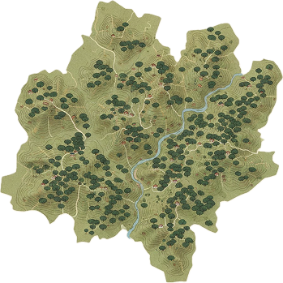

    <div class="main-screen">
        
        <!-- 
            選單結構：
            使用 menu-wrapper 包覆 Icon 與 Menu。
            這樣當滑鼠從 Icon 移到 Menu 上時，Hover 狀態不會中斷。
        -->
        <div class="menu-wrapper">
            <!-- 漢堡選單 Icon (絕對定位在左上) -->
            <div class="top-bar" style="pointer-events: none;"> <!-- pointer-events: none 讓點擊穿透到 wrapper -->
                <div class="menu-trigger" style="pointer-events: auto;">
                    <i class="fas fa-bars"></i>
                </div>
            </div>

            <!-- 滑出的選單內容 -->
            <div class="side-menu">
                <!-- 預留連結，暫不做邏輯 -->
                <div class="menu-item" data-page="tea_cabinet">茶 櫃</div>
                <div class="menu-item" data-page="costume_achievement">裝扮與成就</div>
                <div class="menu-item" data-page="setting">設 定</div>
            </div>
        </div>

        <!-- 真實的 Header (為了放置右邊的 Avatar) -->
        <div class="top-bar" style="position: absolute; top: 0; width: 100%; pointer-events: none;">
            <div></div> <!-- 左邊佔位 -->
            <div class="user-avatar" style="pointer-events: auto;">
                <!-- 請在此放入使用者頭像圖片路徑 -->
                
            </div>
        </div>

        <!-- 中間文字資訊 -->
        <div class="info-section">
            <div class="info-title">今日專注時間</div>
            <div class="info-time">3 : 00 : 00</div>
        </div>

        <!-- 中間地圖/圖片 -->
        <div class="map-container">
            <!-- 請在此更換您的茶園圖片路徑 -->
            <!-- 這裡先用一個綠色色塊圖片作為示意 -->
            
        </div>

        <!-- 底部按鈕 -->
        <div class="bottom-area">
            <button data-page="map" class="action-btn">
                前往深坑茶園
            </button>
        </div>

